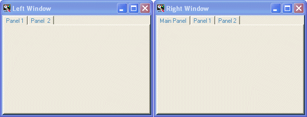
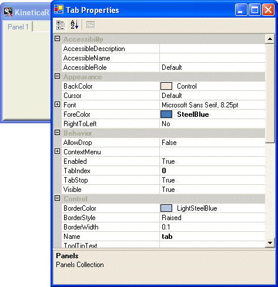
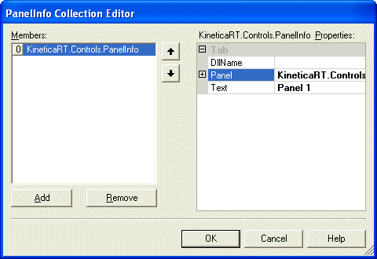

KineticaRT Studio windows can be added, created and removed from the main menu / Window menu, see Configuring Projects , and provide a place to display data and accept user input.

There can be any number of windows in a KineticaRT Project. A typical project would have one window for each monitor on your computer as shown above.
Each window contains a number of panels, these typically have a tab displayed at the top as in the above example allowing the user to switch between the panels. A panel can be displayed in multiple windows.
See Configuring Panels for details on how to display controls in the panels.
Having added a window to the project, it can be configured by right clicking on the display (panel) area of the window and selecting Enter Edit Mode, then right clicking again and selecting Advanced Properties. The rest of the options on the right click menu are for configuring the panel.
The properties on the Advance Properties display are all either for the window or default values for all panels in the window.

Most of the window properties can be left at their default values, the following properties are the most useful:
After changing any of these properties, the window file should be saved if you want the change to be persisted.
This property contains the collection of panels in the window. Click on the "..." button to enter the Panel Collection Editor:

Remember to save the window from the main menu / Window menu after adding or configuring a panel.
This controls whether the tabs are displayed at the top of the panels. If this is set to False then the user can not change panels using the tabs but they can be still be selected from sequences (e.g. either automatically or on a button press).
These set the default colors / font for all the panels in the window.
Setting these values instead of setting the same properties on each control makes it far easier to change the color scheme / font for the application in future.
Some of these properties are currently not saved when saving the window file. This will be fixed in the next version.